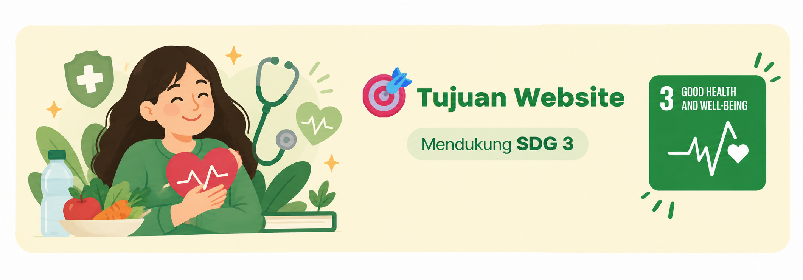

Edukasi publik pola hidup sehat untuk mendukung SDG 3 di Indonesia.

Website ini dibuat sebagai edukasi publik tentang pola hidup sehat untuk mendukung pencapaian SDG 3 (Kehidupan Sehat dan Sejahtera) di Indonesia.
Website ini juga disusun untuk memenuhi tugas Ujian Tengah Semester (UTS) mata kuliah Pemrograman Web.
Kami menyadari website ini masih belum sempurna. Mohon maaf apabila masih terdapat kekurangan, dan terima kasih atas pengertiannya. 🙏